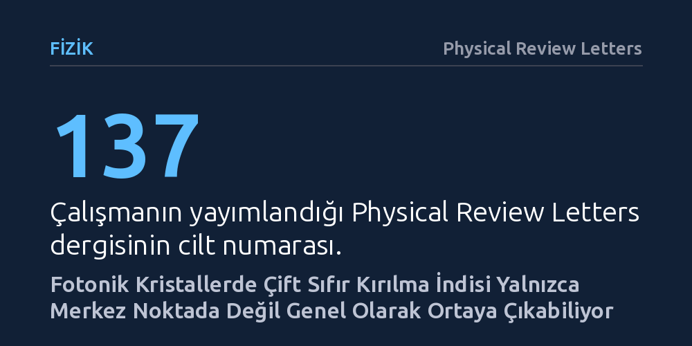

FIZIK · Physical Review Letters · 2026-09-09
Araştırmacılar, ışığın kırılma indisinin sıfırlandığı fotonik kristallerin yalnızca dalga bölgesinin merkezinde oluşabileceği yönündeki yaygın kabulü inceledi. Dirac benzeri konik enerji dağılımları kullanan ekip, çift sıfır indis etkisinin merkeze bağımlı olmadığını ve genel noktalarda da gerçekleşebileceğini ortaya koydu.
Sıfır kırılma indisli optik malzemelerin sadece çok kısıtlı simetri merkezlerinde değil, çok daha esnek dalga vektörlerinde ve kristal yapılarında tasarlanabileceğini gösterir.

Işık bir ortamdan geçerken genellikle o ortamın kırılma indisiyle etkileşime girer; örneğin su veya camda hızı yavaşlar ve yönü değişir. Ancak dalga fiziğindeki son gelişmeler, hem elektriksel geçirgenliği hem de manyetik geçirgenliği aynı anda sıfıra yaklaştırarak "çift sıfır indisli" fotonik ortamlar oluşturmayı mümkün kılmıştır. Kırılma indisinin sıfır olması, ışık dalgasının faz hızının neredeyse sonsuza yaklaşması ve ortam boyunca faz farkı yaşamadan anında yayılması anlamına gelir. Bu durum, ışığın dağılmadan ve şekil bozukluğuna uğramadan yönlendirilmesi için eşsiz bir zemin sunar.
Ne var ki bugüne kadar araştırmacılar bu olağanüstü optik davranışın çok kısıtlı bir bölgeye hapsolduğunu kabul ediyordu. Yaygın kabule göre çift sıfır indis etkisi, yalnızca kristalin momentum haritasındaki simetri merkezi olan "Brillouin bölgesi merkezinde (Γ noktası)" ortaya çıkabilirdi. Bu teorik kısıtlama, sıfır indisli metamalzemelerin sadece belirli simetri koşullarında tasarlanabilmesine yol açıyor ve pratik optik devrelerin geliştirilmesinde ciddi bir darboğaz oluşturuyordu.
Araştırmacılar, bu yerleşik sınırın mutlak bir doğa kuralı olup olmadığını anlamak için fotonik kristallerin bant yapılarını kapsamlı biçimde incelemeye aldı. Bant yapıları, elektromanyetik dalgaların kristal içinde hangi frekanslarda ve yönlerde ilerleyebileceğini belirleyen temel enerji dağılım haritalarıdır. Grafen gibi kuantum malzemelerinde elektronların kütlesiz parçacıklar gibi davranmasını sağlayan Dirac konileri, fotonik kristallere uyarlandığında fotonların da benzer bir konik enerji dağılımı sergilemesini sağlar.
Çalışmada, hem tam Dirac benzeri hem de yarı Dirac konik dağılım gösteren fotonik kristal modelleri teorik ve sayısal olarak ele alındı. Araştırma ekibi, kristalin periyodik yapısındaki dalga yayılım denklemlerini matematiksel olarak modelledi ve farklı dalga vektörlerindeki enerji dağılımlarını hesapladı. Böylece sıfır kırılma indisinin oluşma şartları, kristalin simetri eksenlerinin ötesine taşınarak adım adım test edildi.
Yürütülen analizler, çift sıfır indis özelliğinin yalnızca Brillouin bölgesinin merkezindeki Γ noktasıyla sınırlı olmadığını gösterdi. Yazarlar, Dirac benzeri konik dağılımlara sahip fotonik kristallerin, kristalin diğer momentum noktalarında da uygun koşullar altında çift sıfır indis davranışı sergileyebileceğini ortaya koydu.
Elde edilen bulgu, sıfır indis durumunun kristalin dalga haritasında yalnızca tek bir özel noktaya bağımlı olmadığını, konik bant yapısının sağlandığı genel noktalarda da gerçekleşebileceğini kanıtlıyor. Böylece dalga boyunun sonsuz gibi davrandığı ve faz kaymasının ortadan kalktığı bu özel optik rejim, geometrik olarak çok daha serbest biçimlerde tetiklenebilir hale geliyor.
Bu teorik genelleme, gelecekteki fotonik entegre devrelerin ve optik dalga kılavuzlarının tasarımında önemli bir esneklik sunmaktadır. Işığın sıfır faz değişimiyle taşınabilmesi, karmaşık mikroçiplerde sinyallerin gecikmesiz ve biçim bozulması yaşamadan iletilmesini kolaylaştırır. Merkez noktası zorunluluğunun kalkması, mühendislerin kristal yapıları katı simetri kurallarına bağımlı kalmadan farklı açılarda ve doğrultularda optimize edebileceği anlamına gelir.
Bununla birlikte, çalışmanın şu aşamada teorik modelleme ve elektromanyetik simülasyon düzeyinde olduğunu göz önünde bulundurmak gerekir. Malzemedeki kaçınılmaz optik kayıplar ve üretim kusurları gibi etkenlerin bu genel etkiyi pratikte ne ölçüde etkileyeceği, ileride yapılacak laboratuvar deneyleriyle netleşecektir. Yine de çalışma, sıfır indisli fotonik araştırmalarında uzun süredir benimsenen katı bir teorik sınırı genişletmeyi başarmıştır.